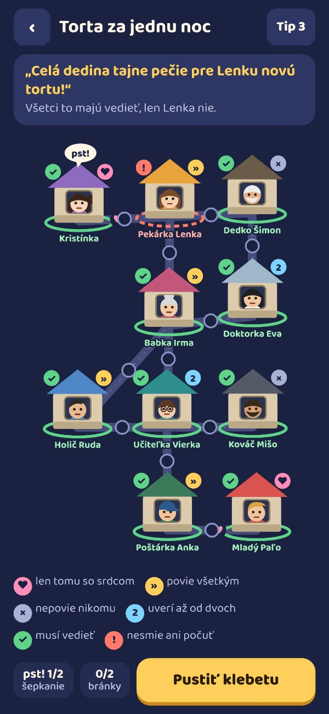
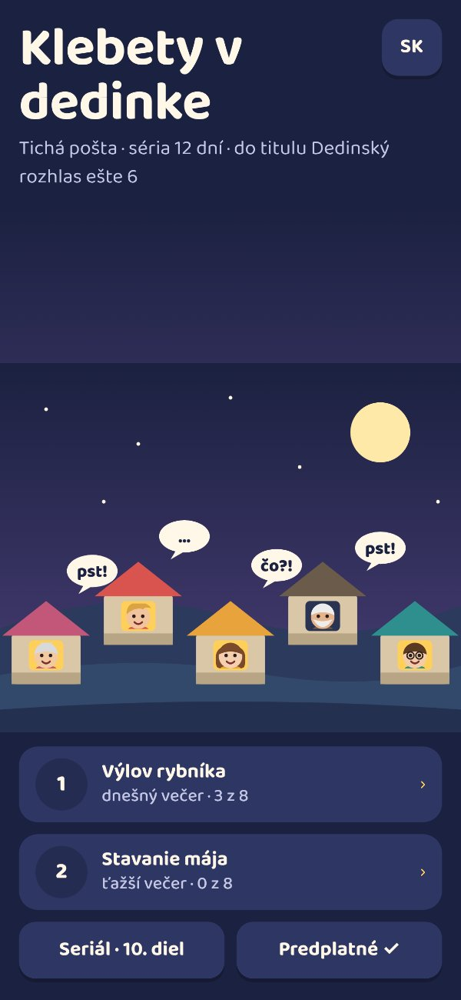
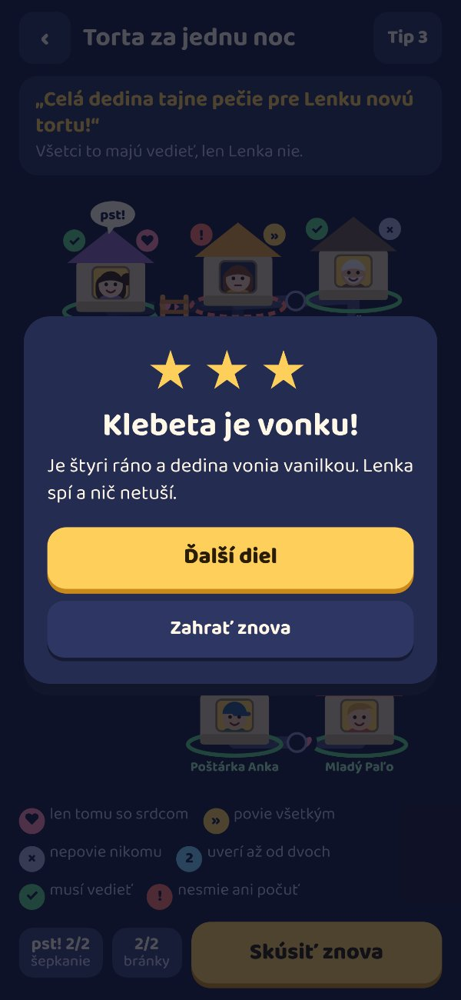

Kto sa to má dozvedieť a kto nikdy?
Pohodová hádanková hra na cestu domov. Pošepkaj klebetu jednému susedovi a sleduj, ako putuje chodníčkami Šuškanoviec. Babka to povie všetkým, dedko nikomu a starosta uverí, až keď to počuje dvakrát.
Čoskoro v Google Play a App Store
Ako sa hrá
- Prečítaj si dnešnú klebetu a kto ju má či nesmie počuť.
- Ťukni na suseda, ktorému ju pošepkáš.
- Zavri bránky, aby sa nedostala do nesprávneho domu.
- Pusti klebetu a sleduj, ako putuje. Každý sused má svoje zvyky.


Každý deň dva nové večery
Osem klebiet za večer, každá o kúsok ťažšia. Asi 20 minút, akurát na autobus či vlak domov.
Príbeh na pokračovanie
Zmiznutá torta, tajná žiadosť o ruku a cudzinec v kožuchu, v dvoch sériách.
Jeden palec, bez zvuku
Veľké, jasné obrázky. Hraj aj postojačky v električke, kedykoľvek prestaň a pokračuj neskôr.
Funguje bez internetu
Žiadny účet ani internet. Nové večery pribudnú každý deň samy.
Cena
Stiahnutie zadarmo. Prvý večer každý deň a prvé tri diely príbehu sú zadarmo, s krátkou reklamou medzi klebetami. Klebety Plus odomkne celý príbeh, každý deň druhý, ťažší večer a žiadne reklamy: 7 dní zadarmo, potom 4,99 € mesačne alebo 39,99 € ročne. Nápovedy navyše: 5 za 0,99 €. Zrušiť môžeš kedykoľvek v nastaveniach obchodu.
Pomoc a kontakt
Zasekol si sa pri klebete alebo máš nápad pre dedinu? Napíš nám, odpovedáme na každý e-mail.
parentshelpmy@gmail.com